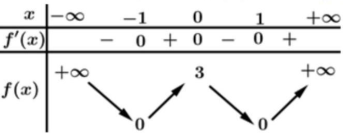
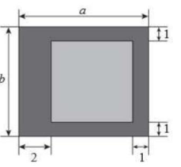
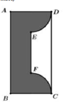

ĐỀ THI TOÁN - ĐỀ SỐ 64 HOT
Phần I: Trắc Nghiệm Nhiều Lựa Chọn
Tóm tắt kiến thức: Lũy thừa và căn bậc
Quy tắc: \( a^m : a^n = a^{m-n} \), \( \sqrt[n]{a^m} = a^{m/n} \). Với \( a > 0 \), áp dụng các quy tắc lũy thừa và căn để đơn giản hóa biểu thức.
Câu 1:
Với \( a \) là số thực dương tùy ý, \( a^3 : \sqrt[3]{a^2} \) bằng
Chọn đáp án:
Lời giải:
Ta có: \( a^3 : \sqrt[3]{a^2} = a^3 : a^{\frac{2}{3}} = a^{3 - \frac{2}{3}} = a^{\frac{9}{3} - \frac{2}{3}} = a^{\frac{7}{3}} = a \).
Đáp án: D.
Tóm tắt kiến thức: Tính đơn điệu của hàm số
Hàm số đồng biến trên khoảng \( (a; b) \) nếu \( f'(x) > 0 \), nghịch biến nếu \( f'(x) < 0 \). Bảng biến thiên cho biết dấu của \( f'(x) \), từ đó xác định các khoảng đồng biến/nghịch biến.
Câu 2:
Cho hàm số bậc bốn \( f(x) \) có bảng biến thiên như sau:

Hàm số đã cho đồng biến trên khoảng nào dưới đây?
Chọn đáp án:
Lời giải:
Dựa vào bảng biến thiên, hàm số \( f(x) \) đồng biến trên các khoảng \( (-1; 0) \) và \( (1; +\infty) \).
Đáp án: C.
Tóm tắt kiến thức: Trọng tâm tam giác
Trọng tâm \( G \) của tam giác \( ABC \) có tọa độ: \( \left( \frac{x_A + x_B + x_C}{3}; \frac{y_A + y_B + y_C}{3}; \frac{z_A + z_B + z_C}{3} \right) \).
Câu 3:
Trong không gian \( Oxyz \), cho hai điểm \( A(1; -2; 0) \), \( B(5; -4; 6) \). Trọng tâm của tam giác \( OAB \) có tọa độ là
Chọn đáp án:
Lời giải:
Tọa độ gốc \( O(0; 0; 0) \), \( A(1; -2; 0) \), \( B(5; -4; 6) \).
Trọng tâm \( G \): \( \left( \frac{0 + 1 + 5}{3}; \frac{0 + (-2) + (-4)}{3}; \frac{0 + 0 + 6}{3} \right) = \left( 2; -2; 2 \right) \).
Đáp án: D.
Tóm tắt kiến thức: Dãy số
Giá trị của dãy số \( u_n \) tại \( n \) được tính bằng cách thay \( n \) vào công thức tổng quát của dãy.
Câu 4:
Cho dãy số \( (u_n) \) với \( u_n = \frac{1}{n+1}, \forall n \in \mathbb{N}^* \). Giá trị của \( u_3 \) bằng
Chọn đáp án:
Lời giải:
Với \( u_n = \frac{1}{n+1} \), ta có: \( u_3 = \frac{1}{3+1} = \frac{1}{4} \).
Đáp án: B.
Tóm tắt kiến thức: Nguyên hàm
Nguyên hàm của \( f(x) = 2x + \sin x \): \( \int 2x \, dx = x^2 \), \( \int \sin x \, dx = -\cos x \), cộng thêm hằng số \( C \).
Câu 5:
Họ nguyên hàm của hàm số \( f(x) = 2x + \sin x \) là
Chọn đáp án:
Lời giải:
Ta có: \( \int f(x) \, dx = \int (2x + \sin x) \, dx = \int 2x \, dx + \int \sin x \, dx = x^2 - \cos x + C \).
Đáp án: A.
Tóm tắt kiến thức: Vector trong hình học không gian
Hai vector cùng phương nếu chúng tỷ lệ với nhau. Trong hình hộp, kiểm tra vector nào có hướng song song với vector đã cho.
Câu 6:
Cho hình hộp \( ABCD.A'B'C'D' \). Vector nào sau đây cùng phương với \( \overrightarrow{BC} \)?

Chọn đáp án:
Lời giải:
Từ hình vẽ, vector \( \overrightarrow{D'A'} \) cùng phương với \( \overrightarrow{BC} \).
Đáp án: D.
Tóm tắt kiến thức: Phương trình logarit
Phương trình \( \ln(a) \cdot \ln(b) = 0 \) có nghiệm khi \( \ln(a) = 0 \) hoặc \( \ln(b) = 0 \), tức là \( a = 1 \) hoặc \( b = 1 \). Kiểm tra điều kiện xác định.
Câu 7:
Số nghiệm của phương trình \( \ln(x-1) \cdot \ln(x+2) = 0 \) là
Chọn đáp án:
Lời giải:
Điều kiện xác định: \( \left\{ \begin{array}{l} x-1 > 0 \\ x+2 > 0 \end{array} \right. \Rightarrow x > 1 \).
Phương trình: \( \ln(x-1) \cdot \ln(x+2) = 0 \Leftrightarrow \left[ \begin{array}{l} \ln(x-1) = 0 \\ \ln(x+2) = 0 \end{array} \right. \Leftrightarrow \left[ \begin{array}{l} x-1 = 1 \\ x+2 = 1 \end{array} \right. \Leftrightarrow \left[ \begin{array}{l} x = 2 \\ x = -1 \end{array} \right. \).
Kiểm tra: \( x = -1 \) không thỏa mãn điều kiện \( x > 1 \). Vậy chỉ có nghiệm \( x = 2 \).
Đáp án: B.
Tóm tắt kiến thức: Góc giữa hai mặt phẳng
Góc giữa hai mặt phẳng được xác định bởi góc giữa hai vector pháp tuyến: \( \cos \theta = \frac{|\vec{n}_1 \cdot \vec{n}_2|}{|\vec{n}_1| |\vec{n}_2|} \).
Câu 8:
Trong không gian \( Oxyz \), góc giữa hai mặt phẳng \( (P): x - 2 = 0 \) và \( (Q): z - 5 = 0 \) là
Chọn đáp án:
Lời giải:
Vector pháp tuyến: \( \vec{n}_P = (1; 0; 0) \), \( \vec{n}_Q = (0; 0; 1) \).
\( \cos \theta = \frac{|\vec{n}_P \cdot \vec{n}_Q|}{|\vec{n}_P| |\vec{n}_Q|} = \frac{|1 \cdot 0 + 0 \cdot 0 + 0 \cdot 1|}{\sqrt{1^2} \cdot \sqrt{1^2}} = 0 \Rightarrow \theta = 90^\circ \).
Đáp án: C.
Tóm tắt kiến thức: Định lý cơ bản của tích phân
Nếu \( f(x) \) có đạo hàm liên tục trên \( [a; b] \), thì \( \int_a^b f'(x) \, dx = f(b) - f(a) \).
Câu 9:
Cho hàm số \( f(x) \) có đạo hàm liên tục trên đoạn \( [1; 4] \) và thỏa mãn \( f(1) = 10 \), \( \int_1^4 f'(x) \, dx = 24 \). Giá trị của \( f(4) \) bằng
Chọn đáp án:
Lời giải:
Ta có: \( \int_1^4 f'(x) \, dx = f(4) - f(1) = 24 \).
Với \( f(1) = 10 \), ta được: \( f(4) - 10 = 24 \Rightarrow f(4) = 34 \).
Đáp án: A.
Tóm tắt kiến thức: Tứ phân vị
Tứ phân vị thứ nhất \( Q_1 \) của mẫu số liệu là giá trị tại vị trí \( \frac{n+1}{4} \) (nếu nguyên) hoặc trung bình của hai giá trị gần nhất. Với số liệu ghép nhóm, xác định nhóm chứa \( Q_1 \).
Câu 10:
Mức thưởng tết (đơn vị: triệu đồng) cho các nhân viên của một công ty được thống kê trong bảng sau:

| Mức thưởng tết | \([5; 10)\) | \([10; 15)\) | \([15; 20)\) | \([20; 25)\) | \([25; 30)\) |
|---|---|---|---|---|---|
| Số nhân viên | 13 | 35 | 47 | 25 | 10 |
Chọn đáp án:
Lời giải:
Tổng số nhân viên: \( n = 13 + 35 + 47 + 25 + 10 = 130 \).
Vị trí tứ phân vị thứ nhất: \( \frac{n+1}{4} = \frac{131}{4} = 32.75 \approx 33 \).
Sắp xếp: \( x_1, \ldots, x_{13} \in [5; 10) \), \( x_{14}, \ldots, x_{48} \in [10; 15) \), \( x_{49}, \ldots, x_{95} \in [15; 20) \), \( x_{96}, \ldots, x_{120} \in [20; 25) \), \( x_{121}, \ldots, x_{130} \in [25; 30) \).
Giá trị tại vị trí 33: \( x_{33} \in [10; 15) \).
Đáp án: B.
Tóm tắt kiến thức: Khoảng cách trong không gian
Khoảng cách từ điểm đến mặt phẳng là độ dài đoạn vuông góc từ điểm đó đến mặt phẳng. Sử dụng tính chất hình học để xác định.
Câu 11:
Cho hình lăng trụ đứng \( ABC.A'B'C' \) có đáy là tam giác vuông cân tại \( A \), \( AB = 1 \). Khoảng cách từ điểm \( B \) đến mặt phẳng \( (A'A'C'C) \) là
Chọn đáp án:
Lời giải:
Hình lăng trụ đứng \( ABC.A'B'C' \Rightarrow AA' \perp (ABC) \Rightarrow AA' \perp AB \).
Tam giác \( ABC \) vuông cân tại \( A \Rightarrow AC \perp AB \).
Mặt phẳng \( (A'A'C'C) \) chứa \( AC \) và \( AA' \), do đó \( AB \perp (A'A'C'C) \).
Khoảng cách từ \( B \) đến \( (A'A'C'C) \) là \( AB = 1 \).
Đáp án: D.
Tóm tắt kiến thức: Cực trị của hàm số
Điểm cực đại tại \( x_0 \) nếu \( f'(x_0) = 0 \) và \( f'(x) \) đổi dấu từ dương sang âm tại \( x_0 \). Kiểm tra điều kiện của tham số.
Câu 12:
Cho hàm số \( y = f(x) \) có đạo hàm \( f'(x) = (3 - x)(x - a) \) với \( a \in \mathbb{R} \). Tất cả giá trị của \( a \) để hàm số đã cho đạt cực đại tại điểm \( x = 3 \) là
Chọn đáp án:
Lời giải:
Đạo hàm: \( f'(x) = (3 - x)(x - a) = 0 \Leftrightarrow x = 3 \) hoặc \( x = a \).
Để \( x = 3 \) là điểm cực đại, \( f'(x) \) phải đổi dấu từ dương sang âm tại \( x = 3 \).
- Nếu \( a < 3 \): Khi \( x < 3 \), \( (3 - x) > 0 \), \( (x - a) > 0 \Rightarrow f'(x) > 0 \); khi \( x > 3 \), \( (3 - x) < 0 \), \( (x - a) > 0 \Rightarrow f'(x) < 0 \). Đổi dấu thỏa mãn.
- Nếu \( a > 3 \): Khi \( x < 3 \), \( f'(x) > 0 \); khi \( x > 3 \) nhưng \( x < a \), \( f'(x) < 0 \); khi \( x > a \), \( f'(x) > 0 \). Không thỏa mãn cực đại tại \( x = 3 \).
- Nếu \( a = 3 \): \( f'(x) = (3 - x)^2 \), không đổi dấu, không có cực trị.
Vậy \( a < 3 \).
Đáp án: A.
Phần II: Trắc Nghiệm Đúng/Sai
Tóm tắt kiến thức: Hình học không gian
Mặt cầu: Tâm \( I(a; b; c) \), bán kính \( R = \sqrt{a^2 + b^2 + c^2 - d} \) (với phương trình \( x^2 + y^2 + z^2 + 2ax + 2by + 2cz + d = 0 \)).
Khoảng cách từ điểm đến mặt phẳng: \( d = \frac{|ax_0 + by_0 + cz_0 + d|}{\sqrt{a^2 + b^2 + c^2}} \).
Giao tuyến mặt cầu và mặt phẳng là đường tròn nếu \( d < R \).
Câu 13:
Xét mặt cầu \( (S): x^2 + y^2 + z^2 - 2x + 4y + 1 = 0 \) và mặt phẳng \( (P): x + y - z - 2 = 0 \). Xét các phát biểu sau:
Chọn đáp án cho từng phát biểu:
a)
b)
c)
d)
Lời giải:
Mặt cầu \( (S): x^2 + y^2 + z^2 - 2x + 4y + 1 = 0 \).
a) Sai. Hoàn phương: \( (x - 1)^2 + (y + 2)^2 + z^2 = 4 \). Tâm \( I(1; -2; 0) \) đúng
b) Sai. Bán kính \( R = \sqrt{4} = 2 \), đúng,
c) Đúng. Khoảng cách: \( d(I, (P)) = \frac{|1 + (-2) - 0 - 2|}{\sqrt{1^2 + 1^2 + (-1)^2}} = \frac{|-3|}{\sqrt{3}} = \sqrt{3} \).
d) Đúng. Vì \( d = \sqrt{3} < R = 2 \), giao tuyến là đường tròn với bán kính \( r = \sqrt{R^2 - d^2} = \sqrt{4 - 3} = 1 \).
Đáp án: a) Sai, b) Sai, c) Đúng, d) Đúng.
Tóm tắt kiến thức: Tối ưu hóa
Tìm cực trị của hàm số bằng cách lấy đạo hàm, tìm điểm tới hạn, và kiểm tra điều kiện cực tiểu. Diện tích được biểu diễn qua biến phụ thuộc.
Câu 14:
Người ta muốn thiết kế một lồng nuôi cá có bề mặt hình chữ nhật bao gồm phần mặt nước có diện tích bằng \( 54 \, \text{m}^2 \) và phần đường đi xung quanh với kích thước (đơn vị: m) như hình vẽ:

Xét các phát biểu sau:
Chọn đáp án cho từng phát biểu:
a)
b)
c)
d)
Lời giải:
a) Đúng. Kích thước mặt nước: \( (a-3) \) và \( (b-2) \), với \( a > 3 \), \( b > 2 \).
b) Sai. Diện tích mặt nước: \( (a-3)(b-2) = 54 \Rightarrow b-2 = \frac{54}{a-3} \Rightarrow b = \frac{54}{a-3} + 2 \).
c) Sai. Diện tích lồng: \( a \cdot b = a \cdot \left( \frac{54}{a-3} + 2 \right) = \frac{54a}{a-3} + 2a \). Diện tích đường đi: \( \frac{54a}{a-3} + 2a - 54 \).
d) Đúng. Hàm diện tích đường đi: \( f(a) = \frac{54a}{a-3} + 2a - 54 \). Đạo hàm: \( f'(a) = -\frac{162}{(a-3)^2} + 2 = 0 \Rightarrow a = 12 \). Giá trị nhỏ nhất: \( f(12) = 42 \, \text{m}^2 \).
Đáp án: a) Đúng, b) Sai, c) Sai, d) Đúng.
Tóm tắt kiến thức: Tích phân và ứng dụng
Tốc độ thay đổi được biểu diễn bằng đạo hàm hoặc hàm số. Tích phân của tốc độ thay đổi cho lượng thay đổi tổng. Tìm cực trị để xác định giá trị lớn nhất.
Câu 15:
Hệ thống lọc nước bể bơi có hàm số \( f(t) \) liên tục trên đoạn \( [0; 12] \), biểu thị tốc độ thay đổi lượng nước trong bể theo thời gian \( t \) giờ, từ 6 giờ sáng đến 6 giờ chiều:
\[
f(t) = \begin{cases}
-200t + a & \text{khi } 3 \leq t \leq 6, \, a \in \mathbb{R}, \\
100t - 900 & \text{khi } 6 \leq t \leq 12,
\end{cases}
\]
với \( t = 0 \) tại 6 giờ sáng, dung tích bể 1000 gallon, lúc 6 giờ sáng chứa 250 gallon. Xét các phát biểu sau:
Chọn đáp án cho từng phát biểu:
a)
b)
c)
d)
Lời giải:
a) Sai. Tại 9 giờ sáng (\( t = 3 \)): \( f(3) = 100 \cdot 3 - 900 = 300 \) gallon/giờ, không phải 600.
b) Đúng. Tại \( t = 3 \), \( f(t) \) liên tục: \( -200 \cdot 3 + a = 100 \cdot 3 - 900 \Rightarrow -600 + a = -600 \Rightarrow a = 900 \).
c) Sai. Tại 11 giờ trưa (\( t = 5 \)): \( f(5) = -200 \cdot 5 + 900 = -100 \) gallon/giờ. Tại 15 giờ chiều (\( t = 9 \)): \( f(9) = 100 \cdot 9 - 900 = 0 \) gallon/giờ. Chỉ đúng tại 15 giờ.
d) Đúng. Lượng nước: \( V(t) = 250 + \int_0^t f(s) \, ds \). Từ \( t = 3 \) đến \( t = 9 \), nước giảm đến 0; từ \( t = 9 \) đến \( t = 12 \), nước tăng. Tại \( t = 12 \): \( V(12) = 250 + \int_9^{12} (100s - 900) \, ds = 700 \) gallon, là giá trị lớn nhất.
Đáp án: a) Sai, b) Đúng, c) Sai, d) Đúng.
Tóm tắt kiến thức: Xác suất
Xác suất của biến cố: \( P(A) = \frac{\text{số trường hợp thuận lợi}}{\text{tổng số trường hợp}} \). Xác suất có điều kiện: \( P(B|A) = \frac{P(A \cap B)}{P(A)} \). Công thức Bayes: \( P(A|B) = \frac{P(A) \cdot P(B|A)}{P(B)} \).
Câu 16:
Chuồng I có 3 con gà trống và 7 con gà mái, chuồng II có 4 con gà trống và 5 con gà mái. Có 1 con gà từ chuồng I sang chuồng II. Sau đó, có 1 con gà từ chuồng II chạy ra ngoài. Gọi \( A \) là biến cố “có 1 con gà mái từ chuồng I sang chuồng II”, \( B \) là biến cố “con gà từ chuồng II chạy ra ngoài là gà trống”. Xét các phát biểu sau:
Chọn đáp án cho từng phát biểu:
a)
b)
c)
d)
Lời giải:
a) Đúng. \( P(A) = \frac{C_7^1}{C_{10}^1} = \frac{7}{10} = 0,7 \).
b) Sai. Nếu \( A \) xảy ra, chuồng II có 4 trống, 6 mái. \( P(B|A) = \frac{C_4^1}{C_{10}^1} = \frac{4}{10} = 0,4 \).
c) Đúng. \( P(\stackrel{\bullet}{A}) = \frac{C_3^1}{C_{10}^1} = 0,3 \). Nếu \( \stackrel{\bullet}{A} \), chuồng II có 5 trống, 5 mái, \( P(B|\stackrel{\bullet}{A}) = \frac{C_5^1}{C_{10}^1} = 0,5 \). Xác suất toàn phần: \( P(B) = P(A) \cdot P(B|A) + P(\stackrel{\bullet}{A}) \cdot P(B|\stackrel{\bullet}{A}) = 0,7 \cdot 0,4 + 0,3 \cdot 0,5 = 0,43 \).
d) Đúng. \( P(\stackrel{\bullet}{B}) = 1 - P(B) = 0,57 \). Xác suất có điều kiện: \( P(\stackrel{\bullet}{A}|\stackrel{\bullet}{B}) = \frac{P(\stackrel{\bullet}{A}) \cdot P(\stackrel{\bullet}{B}|\stackrel{\bullet}{A})}{P(\stackrel{\bullet}{B})} = \frac{0,3 \cdot \frac{5}{10}}{0,57} = \frac{5}{19} \).
Đáp án: a) Đúng, b) Sai, c) Đúng, d) Đúng.
Phần III: Trắc Nghiệm Trả Lời Ngắn
Tóm tắt kiến thức: Thể tích khối đa diện
Thể tích khối tứ diện \( SABC \): \( V = \frac{1}{3} \cdot S_{\text{đáy}} \cdot h \), với \( S_{\text{đáy}} \) là diện tích tam giác đáy, \( h \) là khoảng cách từ đỉnh đến mặt phẳng đáy.
Câu 17:
Cho hình chóp \( S.ABCD \) có đáy \( ABCD \) là hình vuông cạnh 2, tam giác \( SAB \) vuông cân tại \( S \) và nằm trong mặt phẳng vuông góc với đáy. Gọi \( (P) \) là mặt phẳng chứa \( CD \) và vuông góc với \( (ABCD) \). Trên \( (P) \) lấy điểm \( M \) bất kỳ, thể tích khối tứ diện \( SAMB \) bằng bao nhiêu? (làm tròn kết quả đến hàng phần trăm).
Nhập đáp án:
Lời giải:
Gọi \( H \) là trung điểm \( AB \). Vì tam giác \( SAB \) vuông cân tại \( S \), \( SH \perp AB \), \( SH = \frac{AB}{2} = 1 \).
Diện tích tam giác \( SAB \): \( S_{ABS} = \frac{AB \cdot SH}{2} = \frac{2 \cdot 1}{2} = 1 \).
Vì \( (SAB) \perp (ABCD) \), \( SH \perp AB \), nên \( SH \perp (ABCD) \). Do \( (P) \perp (ABCD) \) và \( (SAB) \perp (ABCD) \), nên \( (P) \parallel (SAB) \).
Lấy \( M \) trên \( CD \), vì \( CD \parallel (SAB) \), nên \( d(M; (SAB)) = d(C; (SAB)) \).
Vì \( CB \perp AB \), \( CB \perp SH \), nên \( CB \perp (SAB) \). Do đó, \( d(C; (SAB)) = BC = 2 \Rightarrow d(M; (SAB)) = 2 \).
Thể tích: \( V_{SAMB} = \frac{1}{3} \cdot d(M; (SAB)) \cdot S_{ABS} = \frac{1}{3} \cdot 2 \cdot 1 = \frac{2}{3} \approx 0,67 \).
Đáp án: 0,67.
Tóm tắt kiến thức: Lãi kép
Công thức lãi kép: \( A = P \left(1 + \frac{r}{n}\right)^{nt} \), với \( P \) là số tiền gốc, \( r \) là lãi suất, \( n \) là số lần ghép lãi trong năm, \( t \) là thời gian (năm).
Câu 18:
Chị Lan mua một chiếc máy tính xách tay giá 25 triệu đồng vào ngày 20/9/2022 bằng thẻ tín dụng của ngân hàng Y. Thẻ được phát hành ngày 10/9/2022, miễn lãi 45 ngày đầu và khuyến mãi thêm 15 ngày không tính lãi. Sau đó, ngân hàng tính lãi suất 18%/năm (lãi kép theo ngày). Chị Lan dự định hoàn nợ vào ngày 10/12/2022. Chị Lan phải trả thêm bao nhiêu nghìn đồng tiền lãi so với giá gốc? (làm tròn đến hàng đơn vị).
Nhập đáp án:
Lời giải:
Thời gian miễn lãi: \( 45 + 15 = 60 \) ngày (từ 10/9/2022 đến 9/11/2022).
Thời gian tính lãi: từ 20/11/2022 đến 10/12/2022 = 21 ngày.
Lãi suất hàng ngày: \( \frac{18\%}{365} = \frac{0,18}{365} \).
Số tiền phải trả: \( T = 25 \cdot \left(1 + \frac{0,18}{365}\right)^{21} \approx 25,260 \) triệu đồng.
Tiền lãi: \( 25,260,000 - 25,000,000 = 260,000 \) đồng = 260 nghìn đồng.
Đáp án: 260.
Tóm tắt kiến thức: Thể tích khối tròn xoay
Thể tích khối tròn xoay quanh trục \( x \): \( V = \pi \int_a^b [f(x)]^2 \, dx \). Xác định hàm số giới hạn miền quay.
Câu 19:
Một vật trang trí có dạng khối tròn xoay tạo thành khi quay miền \( (R) \) (phần tô đậm trong hình vẽ) quanh trục \( AB \). Miền \( (R) \) được giới hạn bởi các cạnh \( AD \), \( AB \), \( BC \), \( EF \) và các cung phần tư của các đường tròn bán kính \( 2 \, \text{cm} \) với tâm lần lượt là trung điểm của \( AD \) và \( BC \). Biết \( ABCD \) là hình chữ nhật có cạnh \( AB = 8 \, \text{cm} \), \( AD = 4 \, \text{cm} \); điểm \( E \) cách \( AD \) một đoạn \( 2 \, \text{cm} \); điểm \( F \) cách \( BC \) một đoạn \( 2 \, \text{cm} \). Thể tích của vật trang trí là bao nhiêu \( \text{cm}^3 \)? (làm tròn đến hàng phần mười).

Nhập đáp án:
Lời giải:
Gắn hệ trục tọa độ: \( A(0; 0) \), \( D(0; 4) \), \( B(8; 0) \), \( C(8; 4) \), \( E(2; 2) \), \( F(6; 2) \).
Đường tròn qua \( D \) và \( E \): \( x^2 + (y-2)^2 = 4 \Rightarrow y = \sqrt{4 - x^2} + 2 \) (phần trên).
Thể tích: \( V = 2\pi \int_0^2 \left[ (\sqrt{4 - x^2} + 2)^2 - 2^2 \right] \, dx + \pi \int_2^8 2^2 \, dx \approx 213,0 \, \text{cm}^3 \).
Đáp án: 213.
Tóm tắt kiến thức: Xác suất có điều kiện và Bayes
Xác suất có điều kiện: \( P(A|B) = \frac{P(A \cap B)}{P(B)} \). Công thức Bayes: \( P(A|B) = \frac{P(A) \cdot P(B|A)}{P(B)} \). Xác suất toàn phần: \( P(B) = \sum P(A_i) \cdot P(B|A_i) \).
Câu 20:
Trong quân sự, một máy bay chiến đấu của đối phương xuất hiện ở vị trí \( X \) với xác suất 0,55 hoặc vị trí \( Y \). Tên lửa được bố trí tại \( X \) và \( Y \). Nếu máy bay ở \( X \), bắn 2 quả tên lửa; nếu ở \( Y \), bắn 1 quả. Xác suất tên lửa bắn trúng là 0,8, các bệ phóng hoạt động độc lập. Máy bay bị bắn hạ nếu trúng ít nhất 1 quả tên lửa. Biết máy bay bị bắn hạ, tính xác suất máy bay bị bắn hạ ở vị trí \( X \). (làm tròn đến hàng phần trăm).
Nhập đáp án:
Lời giải:
Gọi \( A \): Máy bay ở \( X \), \( P(A) = 0,55 \), \( P(\stackrel{\bullet}{A}) = 0,45 \).
Gọi \( B \): Máy bay bị bắn hạ.
Tại \( Y \): \( P(B|\stackrel{\bullet}{A}) = 0,8 \).
Tại \( X \): Xác suất không bắn trúng: \( P(\stackrel{\bullet}{B}|A) = 0,2 \cdot 0,2 = 0,04 \Rightarrow P(B|A) = 1 - 0,04 = 0,96 \).
Xác suất toàn phần: \( P(B) = P(A) \cdot P(B|A) + P(\stackrel{\bullet}{A}) \cdot P(B|\stackrel{\bullet}{A}) = 0,55 \cdot 0,96 + 0,45 \cdot 0,8 = 0,888 \).
Xác suất có điều kiện: \( P(A|B) = \frac{P(A) \cdot P(B|A)}{P(B)} = \frac{0,55 \cdot 0,96}{0,888} \approx 0,59 \).
Đáp án: 0,59.
Tóm tắt kiến thức: Tối ưu hóa diện tích
Diện tích hình thang được tính dựa trên điều kiện song song và tối ưu hóa bằng cách tìm cực đại của hàm diện tích.
Câu 21:
Một công viên hình chữ nhật \( ABCD \) có kích thước \( 20 \, \text{m} \times 25 \, \text{m} \), có hai vị trí \( M \), \( N \) cố định lần lượt thuộc cạnh \( AB \) và \( BC \) sao cho \( BM = BN = 10 \, \text{m} \). Trên cạnh \( CD \) và \( AD \), xác định hai điểm \( P \), \( Q \) để xây dựng sân chơi \( MNPQ \) sao cho \( MNPQ \) là hình thang có \( MN \parallel PQ \). Diện tích lớn nhất của sân chơi là bao nhiêu \( \text{m}^2 \)? (làm tròn đến hàng đơn vị).

Nhập đáp án:
Lời giải:
Đặt tọa độ: \( B(0; 0) \), \( A(0; 20) \), \( M(0; 10) \), \( N(10; 0) \), \( C(25; 0) \), \( D(25; 20) \).
Gọi \( P(25; a) \in CD \), \( Q(b; 20) \in AD \). Vì \( PQ \parallel MN \), \( \overrightarrow{PQ} = k \overrightarrow{MN} \Rightarrow b - 25 = a - 20 \Rightarrow b = a + 5 \).
Diện tích: \( S_{MNPQ} = 20 \cdot 25 - S_{\triangle BMN} - S_{\triangle CPN} - S_{\triangle PQD} - S_{\triangle AMQ} = 225 + \frac{1}{2}a - \frac{1}{2}a^2 \).
Tìm cực đại: \( S(a) = 225 + \frac{1}{2}a - \frac{1}{2}a^2 \). Đạo hàm: \( S'(a) = \frac{1}{2} - a = 0 \Rightarrow a = \frac{1}{2} \).
Giá trị lớn nhất: \( S\left(\frac{1}{2}\right) = 225 + \frac{1}{2} \cdot \frac{1}{2} - \frac{1}{2} \cdot \left(\frac{1}{2}\right)^2 = \frac{1801}{8} \approx 225 \).
Đáp án: 225.
Tóm tắt kiến thức: Hình học không gian
Trong tam giác vuông, sử dụng quan hệ góc và cạnh, phương trình đường thẳng, mặt phẳng để xác định tọa độ điểm.
Câu 22:
Trong không gian \( Oxyz \), cho tam giác \( ABC \) vuông tại \( A \), \( \angle ABC = 30^\circ \), \( BC = 3\sqrt{2} \), đường thẳng \( BC \) có phương trình \( \frac{x-4}{1} = \frac{y-5}{1} = \frac{z+7}{-4} \), đường thẳng \( AB \) nằm trong mặt phẳng \( (\alpha): x + z - 3 = 0 \). Biết đỉnh \( C \) có cao độ âm. Tính hoành độ đỉnh \( A \).
Nhập đáp án:
Lời giải:
Tọa độ \( B \): Giao của đường thẳng \( BC \) và mặt phẳng \( (\alpha) \): \( \left\{ \begin{array}{c} \frac{x-4}{1} = \frac{y-5}{1} = \frac{z+7}{-4} \\ x + z = 3 \end{array} \right. \Rightarrow B(2; 3; 1) \).
Vì \( \angle ABC = 30^\circ \), \( BC = 3\sqrt{2} \), tam giác vuông tại \( A \): \( AB = \frac{3\sqrt{6}}{2} \), \( AC = \frac{3\sqrt{2}}{2} \).
Phương trình: \( \left\{ \begin{array}{l} (x-2)^2 + (y-3)^2 + (2-x)^2 = \frac{27}{2} \\ (x-3)^2 + (y-4)^2 + (6-x)^2 = \frac{9}{2} \end{array} \right. \Rightarrow \left\{ \begin{array}{c} 10x + 2y - 53 = 0 \\ 2x^2 - 8x + y^2 - 6y + \frac{7}{2} = 0 \end{array} \right. \).
Từ \( 10x + 2y = 53 \), \( y = \frac{53 - 10x}{2} \). Thay vào phương trình thứ hai: \( 108x^2 - 972x + 2187 = 0 \Rightarrow x = \frac{9}{2} \).
Tọa độ \( A\left( \frac{9}{2}; 4; -\frac{3}{2} \right) \). Hoành độ: \( \frac{9}{2} = 4,5 \).
Đáp án: 4,5.